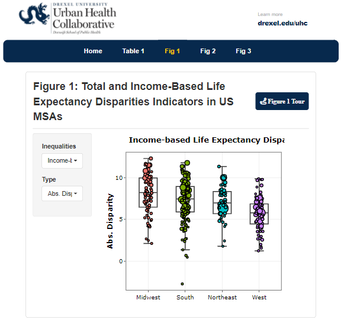

Interactive tools and applications that empower users to explore data
and make decisions.
All Tools
Technology Type
Shiny (6)
Javascript (4)
Tableau (1)
ESRI StoryMap (1)
ESRI WebMap (1)
ESRI WebApp
ESRI Dashboard
ESRI Hub Site
Category
UHC
SALURBAL
Manuscript Supp.
Internal Tools
COVID-19 Health Inequities in Cities
Compare, and track inequities along three dimensions (1) across
subgroups of individuals within cities; (2) across neighborhoods
within cities, and (3) across cities.
This index will support research/evaluations related to bicycle use in
Philadelphia - including an ongoing evaluation of the effects of
Indego bike share membership.
The online dashboard developed by the SALURBAL project allows visitors
to plot trends of COVID-19 cases and deaths as well as to map these
outcomes at various geographic levels: country, city, and sub-city in
Latin American countries and compare the progress of the pandemic
across countries.
In response to the COVID-19 pandemic, the Drexel West Philly Promise
Neighborhood team has built data dashboards to help to identify areas
in Philadelphia that are at highest risk for COVID-19 and its
longer-term impacts.
The goal of this report is to identify and characterize disparities in
cancer incidence and mortality, uses of cancer screening, and select
cancer risk factors in Philadelphia between 2000-2018. The ultimate
purpose is to use this information to motivate and support programs
and policies aimed at reducing cancer risks and disparities.
Developed by the Drexel Urban Health Collaborative in collaboration
with a team from the Philadelphia Department of Public Health and Fox
Chase Cancer Center, this interactive data tool explores cancer,
cancer screening and select cancer risk factors in the neighborhoods
of Philadelphia. The goal of this report is to allow residents to
learn more about cancer risk factors and outcomes in their
neighborhood.
Javascript based interactive vizualizations can be included in basic
HTML pages. This blog shows JS viz from the BCHC COVID-19 Dashboard in
a blog post.
Life Expectancy and Mortality Profiles in Latin American Cities
This app provides extra information and data on the manuscript
entitled Life expectancy and mortality in 363 cities of Latin America:
the SALURBAL project
Heterogeneity in Disparities in Life Expectancy across US Metropolitan
Areas
This article highlights key disparities in life expectancy in US MSAs.
This app does two things: 1) translates the article figures into
interactive visualizations, allowing more granular exploration of the
article analysis, and 2) extends scope of the data visualized to
include all US MSAs.
Unreleased

Life Latin_America_Urban_Areas_1_29_20
Latin America Urban Areas included in the SALURBAL study
This tool examines how to quantify the contributions of city-level
Built Environment (BE) factors to differences in levels of health and
health inequalities within and between cities.
Interactive documents and visualizations can be effective
communication tools for more complex data issues. This examples uses
JS tables and plots to highlight abnormalities in data during quality
checking.